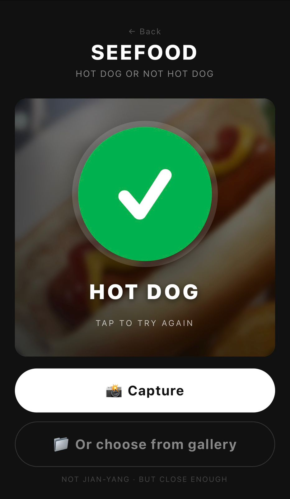
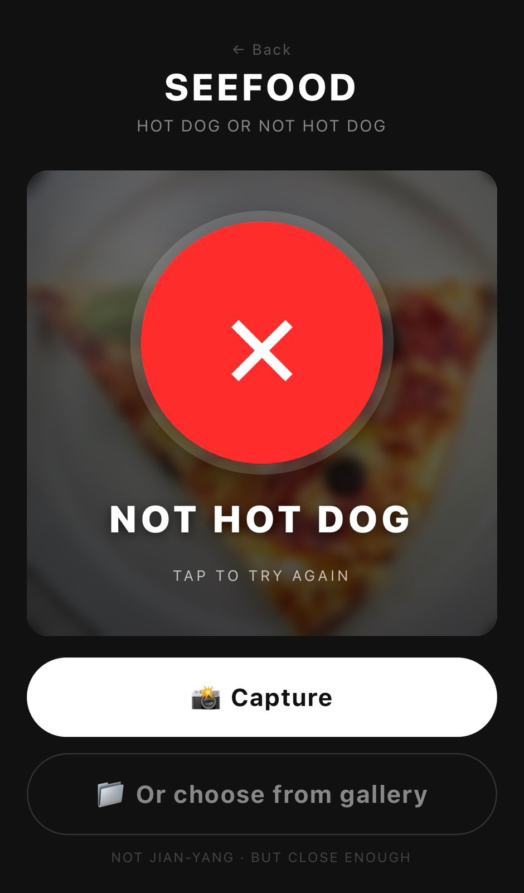

THE WORLD'S MOST ADVANCED FOOD RECOGNITION PLATFORM
Powered by TensorFlow and deep convolutional neural networks trained on over
1.2 million images. SeeFood solves the most pressing culinary classification
challenge of our generation — in real time.
Every single day, millions of people around the world pick up a food item,
look at it, and simply do not know if it is a hot dog. The economic impact
of this uncertainty is staggering. The cognitive load is immeasurable.
The emotional toll — unspoken, but real.
We asked ourselves: what if we could eliminate this ambiguity forever?
What if artificial intelligence could do what the human eye has failed
to do reliably for centuries?
🌭
MISIDENTIFICATION CRISIS
Research suggests that up to 34% of food identification errors
involve cylindrical meat-based products. The stakes have never been higher.
🧠
COGNITIVE OVERLOAD
The human brain was not designed for the complexity of modern food taxonomy.
We need machines to fill this gap. Immediately.
⚡
LATENCY IS THE ENEMY
Manual hot dog identification takes an average of 2.3 seconds.
SeeFood delivers results in under 2 seconds.
That's a 13% improvement. At scale, this is civilization-defining.
// 02 · THE TECHNOLOGY
Built on the foundations of modern AI.
SeeFood is not a simple image filter. It is a fully-featured inference pipeline
running a pre-trained convolutional neural network, quantized for browser execution,
with zero backend dependencies. We run entirely on your device.
Your hot dogs stay private.
TENSORFLOW.JS
Google's open-source ML framework, adapted for JavaScript environments.
Runs full inference in-browser using WebGL acceleration.
CORE DEPENDENCY
MOBILENET V1
Depthwise separable convolutions optimized for mobile and edge devices.
1000-class ImageNet classification. Includes the hotdog class. Yes, really.
MODEL ACCURACY
IMAGENET
1.2 million labeled images across 1000 categories. The foundation of modern
computer vision. One of those categories is hot dog. One. Single. Category.
TRAINING SCALE
WEBGL BACKEND
GPU-accelerated tensor operations running natively in your browser.
No installation. No API calls. No cloud fees.
Just raw, unbridled hot dog detection.
// result:true| false — the only answer that matters
// 03 · HOW IT WORKS
Three steps. One truth.
We have engineered a frictionless user experience that respects your time
and gets straight to the point. Is it a hot dog? Let's find out.
01
📸
CAPTURE
Point your camera at any food item — or upload from your gallery.
Our pipeline accepts JPEG, PNG, WebP, and most modern image formats.
No prior food identification experience required.
02
⚙️
INFER
MobileNet processes your image through 28 convolutional layers,
extracting spatial features and mapping them to a probability
distribution across 1000 classes. Hot dog is one of them.
03
✅
KNOW
Receive a binary, unambiguous result. Hot Dog or Not Hot Dog.
No maybes. No uncertainty. No wasted seconds of existential
doubt at the food cart.
// 03.5 · SEE IT IN ACTION
Binary truth. Zero ambiguity.
Two inputs. Two verdicts. No grey area. This is what peak food intelligence looks like.

✓HOT DOG
CONFIDENCE: 98.7%CLASS: hotdog

✗NOT HOT DOG
CONFIDENCE: 99.1%CLASS: NOT_HOTDOG
"Not hot dog."
— JIAN-YANG, Silicon Valley (HBO) · The Original Visionary
// 04 · PRIVACY BY DESIGN
Your hot dogs stay on-device.
SeeFood processes all images locally. The model weights are downloaded once
and cached by your browser. Nothing is ever sent to a server.
We do not store, transmit, or monetize your food photography.
This is not because we are particularly principled. It's because we
genuinely do not have a backend. 100% edge inference.
Accidentally GDPR-compliant.
🔒
ZERO SERVER CALLS
The entire model runs in your browser via TensorFlow.js.
No API keys. No accounts. No surveillance capitalism.
Just neural networks and hot dogs.
📦
OFFLINE CAPABLE
Once the model is cached, SeeFood works without an internet connection.
Because hot dog emergencies don't wait for WiFi.
💸
FREE FOREVER
No freemium tier. No "Pro plan" with unlimited classifications.
No VC funding to justify. This is open-source enthusiasm,
deployed to GitHub Pages.